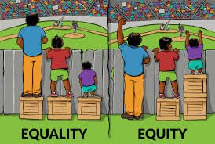
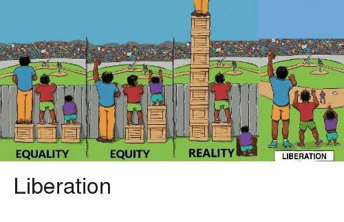

Yes and one of the issue about this is: there are as many view as what producers, only in mapping we have as many views as there are participants even on a simple issue as: where is geographically situated this resource? One important thing we do is propose different views in IN COMMON model depending on the agents.
I have hard time to imagine how a resource scheme can take in account all the different specificity of a production process and work through the different costs and benefices according to real life situations such as power relations and the broad scope of regulatory frameworks, money values, human capacity to understand and valorize the effective amount of work brought into a project (for example experience or relational network, or access to state support such as grants or unemployment money, or family support etc… etc… etc…).
Guts feeling is that governance conversation are crucial in this process and also community based decision making.
In that case the different views might amount to different preliminary agreements among the community and the question becomes if we are talking about many individual across different countries then decisions need to be very well informed about the different situations which is really not easy to achieve.

I know we are working towards liberation, but there is a long way to go.

Those are my 2cts I would be interested to continue the conversation, as we (petites singularités) are very interested to continue discussing issues of community based data management organization for which purpose we are also currently engaged in DREAM even more then in the context of THX, where we join to bring together STS thinking and free software developer’s knowledge.
I am sorry not to be ale to join on Thursday however for further meeting I could also contribute some thoughts about the idea of classification and classifying the world mainly via 2 chapters I would gladly propose people to read 
Anna Lowenhaupt Tsing
Friction: An Ethnography of Global Connection**
Particularly 5 p171 titled:A History of Weediness
even more the section the section called: “Ci t … Ci t … Door … Krekek”
Also Chapter 4
( pdf/epub is on aaaaarg.fail, if people need it I can provide it)
And the small article I contributed some years ago to a work we did with Constant vzw in Brussels about Paul Otlet and Mondothèque: House, City, World, Nation, Globe - Mondothèque